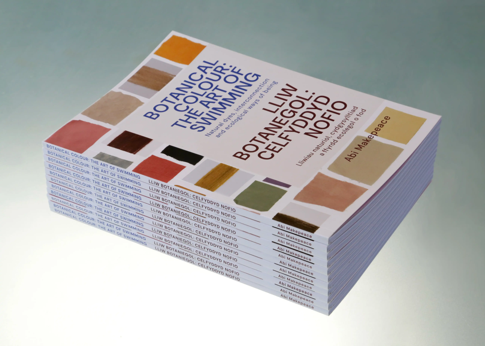
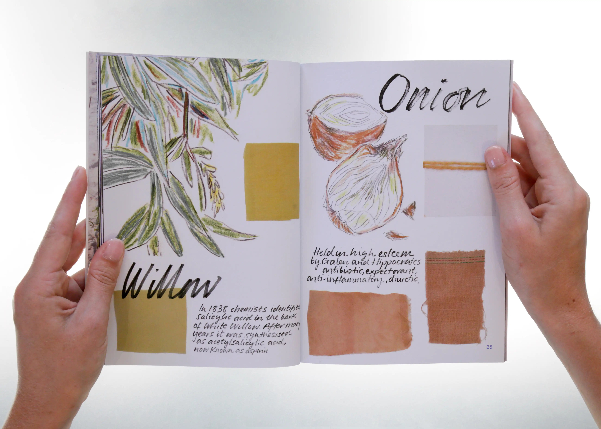
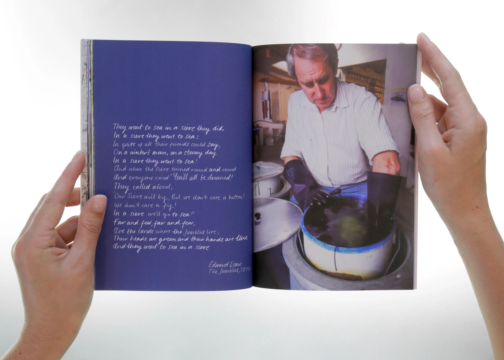

Research & Publication
Throughout Botanical Colour: The Redpath Way, three themes emerged from the research: Colour, Alchemy and Innovation, and All One.
These became the basis for a printed publication and a series of audio essays designed to be experienced together.
As you move through the pages, the audio unfolds alongside them — fragments of oral histories, field recordings, and music, gathered throughout the project.
The publication was originally produced in print and shared freely at the National Botanic Garden of Wales exhibition. A digital version is available to explore here, alongside the full audio work.
Experience the publication & audio essays:
peoplescollection.wales/collections/3023706
Publication design: Aurelia Lange
Sound design & audio essays: Sam Bardsley


